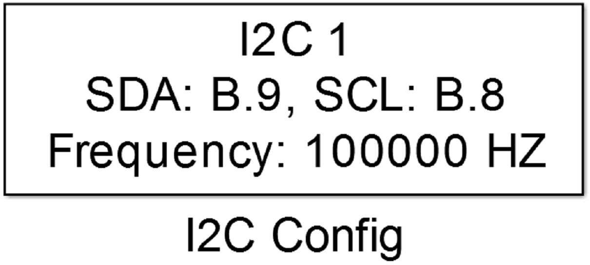
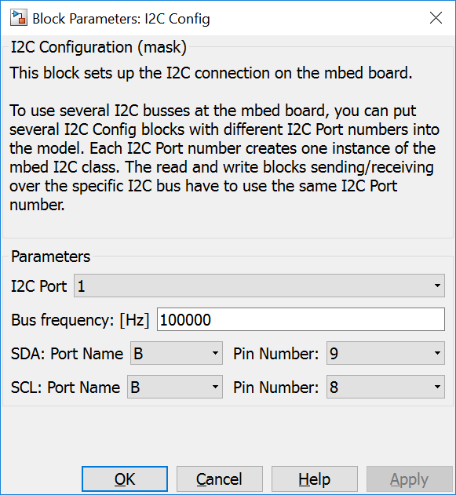
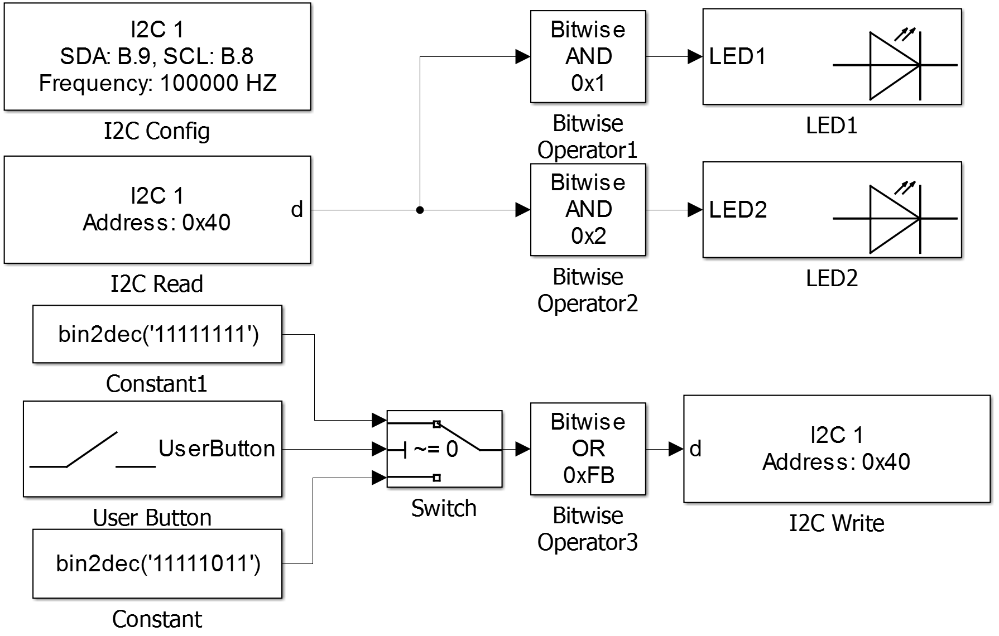

5.3.1. I2C Configuration
5.3.1.1. Description
This block sets up a I2C connection on the mbed board.
You must have one of these blocks in any model that ues I2C blocks.
{kind=link}
This block configures a I2C bus peripheral as master using the selected data (SDA) and clock (SCL) pins. The bus clock frequency can be configured.
When the model uses multiple I2C busses, for each one an own I2C Config block is necessary.
5.3.1.2. Parameters Dialog Box
I2C Port
Specifies an internal I2C port number. It is used to generate unique instance names when more I2C busses are included in the same model and to tie config, read and write blocks together.
Bus frequency
Configures the I2C bus clock frequency.
Port Name/Pin Number (SDA)
Selects the data pin of the I2C peripheral.
Port Name/Pin Number (SCL)
Selects the clock pin of the I2C peripheral.
5.3.1.3. Example
In the example data read from a PCF8574 at address 0x40 is bitmasked. Bits 0 and 1, used as inputs, are written to LED1 and LED2.
The user button is written to bit 3 of the PCF8574. Unused bits and both input bits has to be set to 1 (please see the datasheet). The result is written back to the PCF8574.
{kind=link}
5.3.1.4. Code Generation
Instance names of mbed I2C classes are created by concatenating i2c and <I2C Port>.
Global parts
creates a global instance
I2C i2c<I2C Port>(P<Port Name SDA>_<Pin Number SDA>, P<Port Name SCL>_<Pin Number SCL>);
Initialization Function
and one line in void <Model Name>_initialize(void) function
i2c<I2C Port>.frequency(<Bus frequency>);
in <Model Name>.cpp.